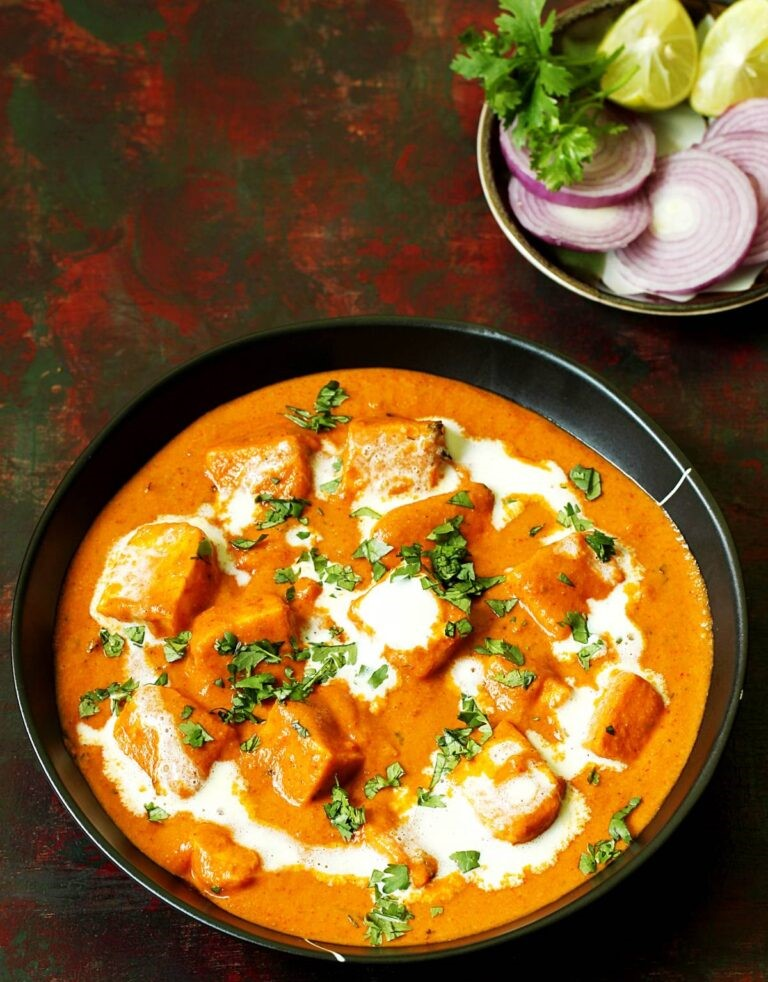

Aloo Gobi Recipe

Ingredients:
- 2 cups cauliflower florets
- 2 medium potatoes, peeled and cubed
- 1 onion, finely chopped
- 2 tomatoes, pureed
- 1 tablespoon ginger-garlic paste
- 2 green chilies, slit
- 1 teaspoon cumin seeds
- 1 teaspoon turmeric powder
- 1 teaspoon red chili powder
- 1 teaspoon coriander powder
- 1 teaspoon garam masala
- 2 tablespoons cooking oil
- Salt to taste
- Fresh coriander leaves for garnish
Instructions:
- Heat oil in a pan and add cumin seeds. Let them splutter.
- Add chopped onions and sauté until golden brown.
- Add ginger-garlic paste and green chilies. Cook for 2 minutes.
- Add turmeric powder, red chili powder, and coriander powder. Mix well.
- Add the potatoes and cauliflower florets. Stir to coat with spices.
- Add tomato puree and cook for 5 minutes.
- Cover the pan and let it cook on low heat until the vegetables are tender.
- Sprinkle garam masala and mix well. Cook for another 2 minutes.
- Garnish with fresh coriander leaves.
Serving Suggestions:
Serve hot with chapati, paratha, or steamed rice for a comforting meal.